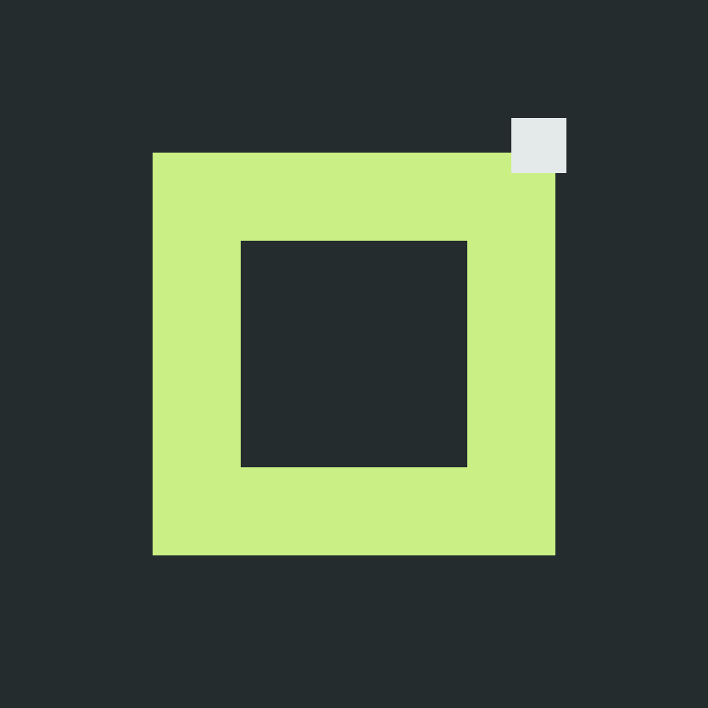
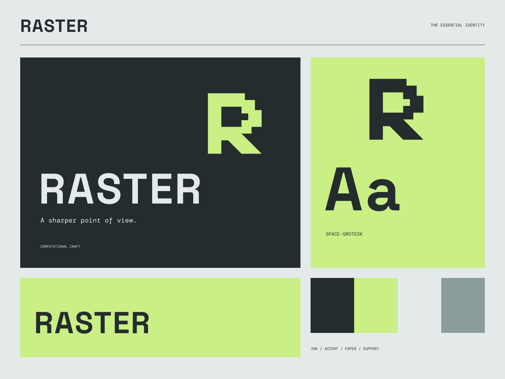

01
Design in detail
A visual practice that finds character in the smallest units.
DESIGN / CODE / MOVING PICTURES
A sharper point of view. Frame 001 / New perspectives

A coherent little world
Frame 001 / New perspectives A sharper point of view.
01
A visual practice that finds character in the smallest units.
02
Experimental systems that are also ready for the real world.
03
Work that keeps an idea clear across frames and formats.

The point of view
Dithered dimensional objects, scanner-like framing, broken grid glyphs, and compact machine labels. A digital visual world with an intentionally crafted edge.